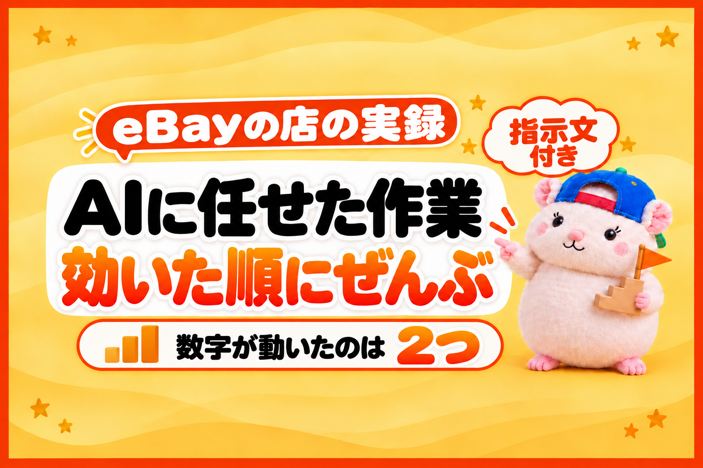

AIに任せる作業は、売上のかけ算のどこに効くかで、順番が決まります。
売上は、3つのかけ算です。
見られた数 × 売れる割合 × 単価。
どの作業が、このどこを動かしたのか。
数字で確かめられたものから、順に書きます。
例えば、ぼくの店では、売れる割合が約3週間で0.54%から0.82%になりました。
約6,300品の店で、30日に売れた数が34件から51件です🐹
効いたのは、出品を増やすことではありませんでした。
先に言っておくと、5つのうち、はっきり数字が動いたのは2つだけです。
残りの3つは「守り」と「効かなかったもの」。
効かなかったものも、ぜんぶ書きます。
1位: 売れるジャンルに、出品を寄せる → 売れる割合に効いた
いちばん効いたのは、出品の中身を「売れるジャンル」に寄せることでした。
AIに、ジャンルごとの売れる割合を出してもらうと、差は7倍以上ありました。
いちばん売れるジャンルは1か月で1.68%。
出品数がいちばん多いジャンルは0.23%でした。
そこで、AIにやってもらったのは2つです。
- 出品の枠があふれそうなときは、売れないジャンルから休ませる
- 売れるジャンルで休んでいる品を、毎日自動で戻す
出品数は、ほとんど変えていません。
それでも、売れる割合は0.54%から0.82%になりました。
出典: 店の10月の計画と週次チェックの記録
同じ時期にほかの手も打っているので、「この作業だけで何%」とは分けられません。
ただ、いちばん大きく動いたのは、この寄せ方の前後でした。
2位: 広告の率を、ジャンルごとに変える → 見られた数に効いた
2番目は、広告の率(売れたときにeBayに払う広告の手数料の割合)です。
AIに、2週間のA/Bテストをしてもらいました。
同じ店の中で、率を上げる品と、そのままの品に分けて比べる方法です。
率を上げた側は、表示が+15.9%、閲覧が+10.2%でした。
そこで、売れるジャンルだけ率を上げて、ほかはそのままにしました。
これは「見られた数」に効いた作業です。
売上まで増えたかは、いま判定しているところなので、ここには書きません。
3位・4位: 守りの作業 → 売上は増えないが、減らさない
3位と4位は、売上を増やす作業ではありません。
売上を減らさない作業です。
3位は、AIの返信の「確認」です。
AIが書いた返信のうち、言い切ってはいけないこと(付属品・適合・値引きの約束など)をふくむものは、送る前に止めるようにしました。
過去の117通で見直すと、8通が当てはまりました。
1通の言い切りが、返品や悪い評価につながります。
4位は、値下げの下限(フロア)です。
最安に合わせる値下げを毎日AIに任せていますが、「ここより下げない」線をAIに毎日そろえてもらっています。
売れても赤字、をふせぐための作業です。
5位: Best Offer → 効かなかった
5位は、効かなかった作業です。
Best Offer(お客さんが値段を提案できる機能)は、店の73%の品でONにしていました。
ところが、交渉で決まった割合は0%でした。
出典: 店の10月の計画の「打ち手」の記録
型番で探して買うお客さんが多い店では、値段の交渉は起きにくいようです。
受賞している店でも、型番ものはOFFにしているところがありました。
「AIに任せて回っている」ことと、「売上に効いている」ことは別です。
回っているだけの作業は、ときどき数字で見直します。
あなたの店で、最初に任せる1つの選び方
あなたの店で、最初にAIに任せる作業は、次の順で選ぶのがおすすめです。
- まず、ジャンルごとの「売れる割合」を出してもらう
- 差がいちばん大きいところに効く作業から任せる
- 任せたら、前と後の数字を同じ基準で比べる
最初の1つは、この指示文をそのままAIに渡せば出せます。
出品中の品を、ジャンルごとに分けてください。
ジャンルごとに、出品数と、この30日で売れた数と、売れた数÷出品数(売れる割合)を表にしてください。
売れる割合が高い順にして、出品数がいちばん多いジャンルとの差も書いてください。
うちは、eBay Japanに書面で確認した範囲(公式のAPIを使う・お客さんの個人情報をAIに渡さない・AIでeBayの画面を開かない)で、AIを使っています。
AIをどこまで使うかは、eBayの規約を確認したうえで、自己責任でお願いします。
まとめ: AIに任せた作業は、かけ算のどこに効いたかで順位をつける
- 効いた: 売れるジャンルに寄せる(売れる割合)・広告の率をジャンルごとに(見られた数)
- 守り: 返信の確認・値下げの下限
- 効かなかった: Best Offer
AIに任せる作業は、増やすほど安心します。
でも、売上が動いたのは2つでした。
あなたの店の「売れる割合」、30日分で出してみてください🐹
▼中の人🏠(レンタルスペース23部屋・売上1.5億)のレンスペ実録

▼ブログ(eBay×レンスペ、全記事まとめ)

▼この店のやり方は、ぜんぶ1冊にまとめてあります
リサーチ・出品・値付け・顧客対応まで、初月利益10万4,286円を出した実店舗の記録と手順を全部書いた教科書です。
読んだその日から、AI社員の作り方をそのまま真似できます。
『AI × eBay輸出の教科書 — 梱包以外、ぜんぶAI』


🎁 2026年10月22日に第3版になりました。顧客対応 完全自動化ツール・ストアドクター・AI自動化コーチなど付録6つは、これまでに買った人も含めて購入者全員に無料で受け取れます。
内容・最新価格は販売ページをご確認ください。